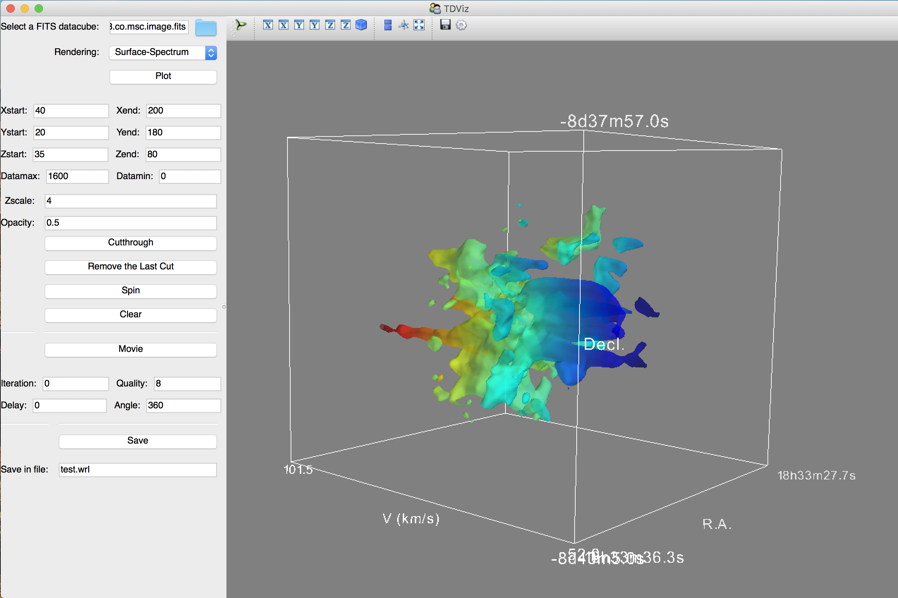
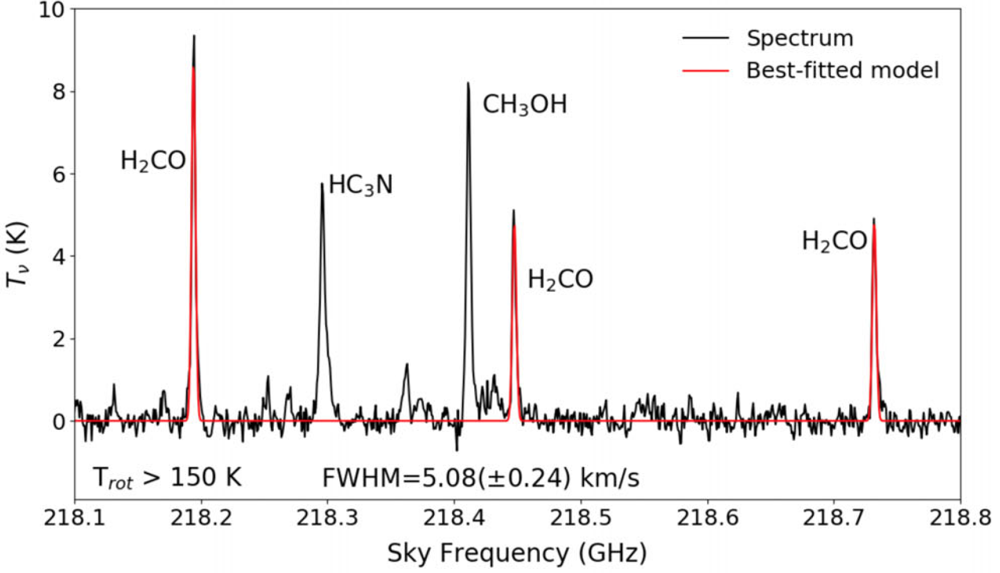

Javascript Applets
Software
Some MIR tricks I learned from my collegues: MIR tricks.
Some Miriad tricks: Miriad tricks.
A simple script to merge single-dish and interferometer data, using the feather task in CASA, adapted from Jens Kauffmann's script: merge.py.
Mi casa no es su casa: CASA nightmares.
Code
Here are some Python codes I wrote. You can also find them on GitHub.
TDViz: Three-dimensional Datacube Visualizer
Related publications: • Lu et al. 2018, ApJ, 855, 9. • Interactive figures on the AstroExplorer.
This code is originally a module prepared for the AY201b course tutored by Prof. Alyssa Goodman at Harvard Astronomy Department (see the module website). It can be run with 'python TDViz.py', as long as you have all the required python packages installed. A snapshot of the interface is shown below.
You can select your own FITS datacubes. Then the starting and ending pixels of the three axes, and the maximum and minimum values will be updated, respectively. The default scene will be the entire datacube. If you want to focus on a smaller region and/or a narrower velocity range, you can change corresponding values and click the 'Plot' button again. You can also exporting a 3D scene or make a GIF movie.
Here is an example: a visualizatin of CO (2-1) outflows in IRAS 18308-0841 as observed by the SMA (Lu et al. 2018):
If you find any bugs or have any questions, please do not hesitate to contact me, thanks!
Dependencies
This code makes use of python modules including MayaVI, TraitsUI, astropy, numpy, and scipy. Normally you can install one of the popular scientific Python packages and have them all. The Anaconda package works well for me.
PyAMOR: Python script for AMmOnia data Reduction
Related publications: • Lu et al. 2015, ApJ, 805, 171. • Lu et al. 2017, ApJ, 839, 1. • Lu et al. 2018, ApJ, 855, 9.
 Figure 6 of Lu et al. 2018, ApJ, 855, 9.
Figure 6 of Lu et al. 2018, ApJ, 855, 9.
This code is dedicated to modeling spectra of low level ammonia transitions (between (J,K)=(1,1) and (5,5)) and deriving parameters including linewidths, column densities, and temperatures under LTE conditions. The curve fitting is implemented by the lmfit package. It is able to fit spectra with up to two velocity components along the line of sight and provide one set of best fitted parameters for each component. For now it can only fit two velocity components in the interative mode, which means you need to manually identify the two velocities and in the case of low S/N ratios the fitting may not converge. When looping through entire maps in the non-interacitve mode, it only fits one velocity component, and if there are more than one component, it will take the highest peak at each pixel to do the fitting.
What it can do now: For low S/N or low spectral resolution data, use cross-correlation between a model and a regridded spectrum (e.g. 10 times smaller channel width) to find the peak velocity, then fix it and run the minimization process. For high S/N data, it is ok to let the peak velocity be a free parameter.
What it will be able to do: • Include all 18 hyperfine components of NH3 (1,1), so that we can determine the intrinsic linewidth. • Be able to fit multiple velocity component (semi-)automatically. • Have an interactive graphic interface.
EMANON: Estimate of Methyl cyanide parameters with NON-linear optimization
Related publications: • Silva et al. 2017, ApJ, 847, 87.
 Figure 6 of Silva et al. 2017, ApJ, 847, 87.
Figure 6 of Silva et al. 2017, ApJ, 847, 87.
A code to fit CH3CN hyperfine lines and estimate linewidths, temperatures, and column densities, under LTE conditions.
It is adapted from Roberto Galvan-Madrid's Mathematica code. 'Emanon' is actually 'No name' spelled backwards. I don't know the origin of this word but I learned it in Shinji Kajio's fiction Memories of Emanon...
FFTL: Fitting Formaldehyde Triple Lines at ~218 GHz
Related publications: • Walker et al. 2018, MNRAS, 474, 2373.
 Figure A2 of Walker et al. 2018, MNRAS, 474, 2373.
A code to fit the three H2CO lines around 218 GHz and estimate linewidths, temperatures, and column densities, under LTE conditions.
A Dancing Dophin
This is the first Python code I wrote back in 2012, when I attended the Practical Python for Astronomers workshop at CfA. You can find it here.